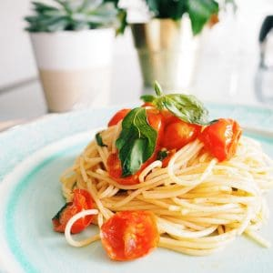

Tomato Pasta

Tomato Pasta is a classic Italian dish. It is healthy, delicious and quick to prepare.
Ingredients:
- 200g of spaghettini pasta
- A pint of cherry tomatoes, sliced
- A handful of basil leaves
- 6 garlic cloves, sliced
- 4 tbsp of extra virgin olive oil
- salt and pepper to taste, salt to season pasta water
- ⅓ cup of reserved hot pasta water or water
Steps:
- Prepare the ingredients as listed above.
- Boil the pasta according to package instructions in a pot of salted water.
- Reserve ⅓ cup of hot pasta water for sauce.
- Meanwhile, in a large pan set on low heat, add your olive oil. Add in garlic and slow fry until fragrant.
- Once fragrant, add in the tomatoes. Season with salt and pepper to taste. Fry until tomatoes are softened.
- Cover with a lid and let it cook for about 3-5 minutes.
- Remove the lid and add in reserved pasta water. Then throw in the cooked pasta.
- Top off with chopped basil leaves and combine well.
- Once combined, turn off your heat and plate your pasta.
This recipes and the photo are borrowed and adapted from Christie At Home
Back to Index